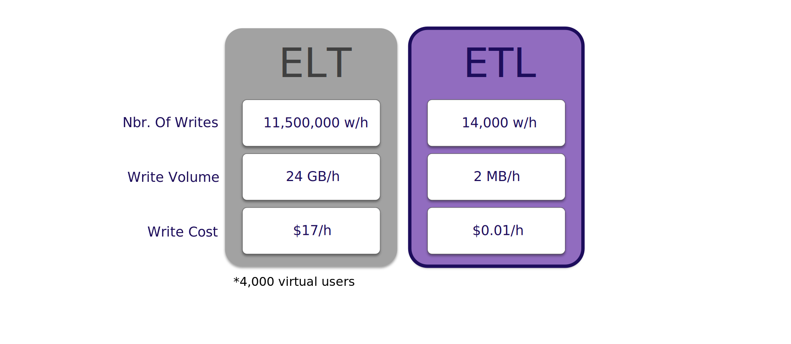
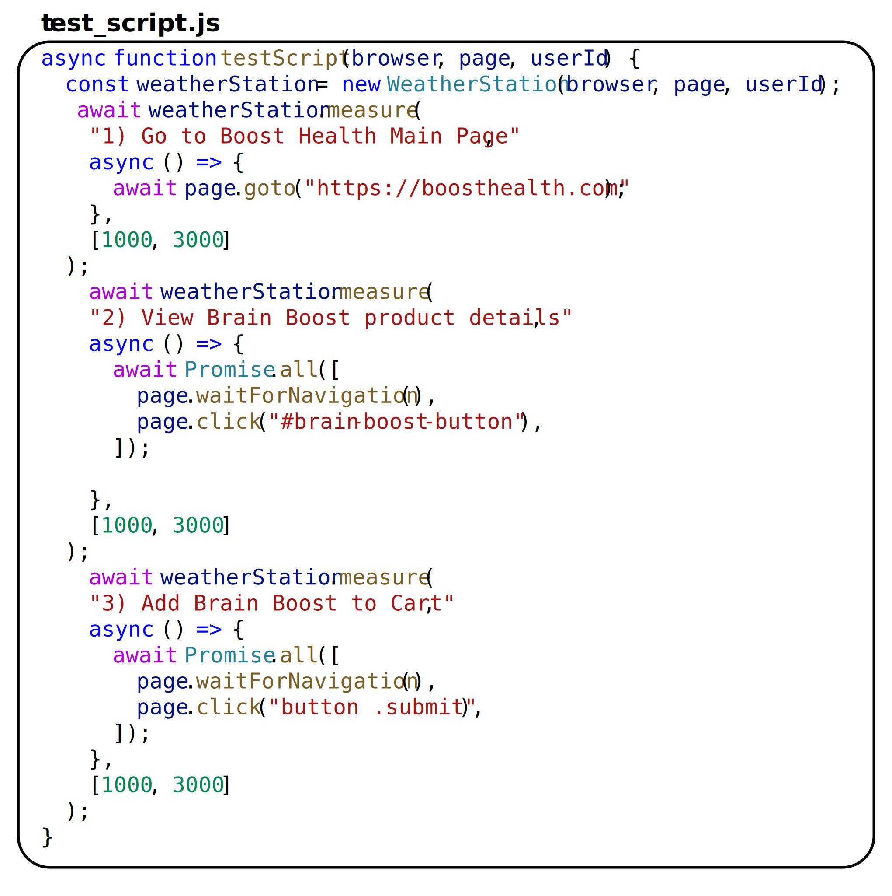
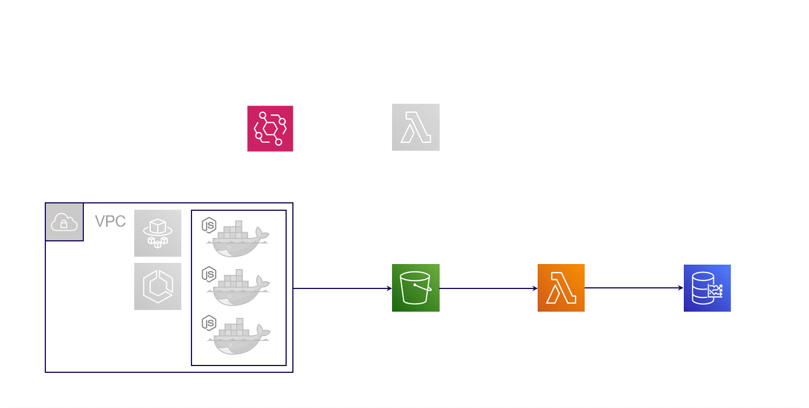

Load tests are a critical tool for any company that wants to build and maintain robust,
scalable websites and web apps. They simulate traffic hitting your servers,
allowing you to measure exactly how your app performs under different load profiles.
The overall concept of load testing was born in the physical world.
For example, structural engineers load test bridges before opening them to the public and power engineers load test electrical distribution systems.
But in the world of software, load testing is the process of directing simulated traffic at any application that handles requests,
be that a website, web app, API endpoint, even load balancers and caches, then measuring that software’s performance under the load.
1.1 Who’s interested in load test results?
Load test results are valuable to both business stakeholders and engineering teams.
On the business side, when an app can’t cope with its current amount of traffic, the app’s performance degrades or the app may stop working entirely.
This results in an immediate drop in the company’s revenue.
From the engineering team’s perspective, load testing provides valuable feedback about your production system - how many concurrent users can it handle?
How does response time change as load increases? Is there an uptick in failed requests under heavier load?
It’s this engineering perspective that we’ll focus on in this case study of Monsoon.
1.2 What is Monsoon?
Monsoon is an open-source, serverless framework for running browser-based load tests in the cloud.
Fig 1.1: Monsoon's dashboard.
Monsoon allows software engineers to easily load test their single-page application in anticipation of traffic spikes or overall business growth.
Monsoon can simulate loads of up to 20,000 concurrent users, and tests can be of any duration, from minutes to weeks or longer.
Engineers can also see their load test results visualized in a near real time dashboard.
1.3 Brain Boost, a Hypothetical User Story
To see load testing in action, let’s spend some time with the engineering team at Boost Health.
Boost is a rapidly-growing startup in the health and wellness space.
Fig 1.1: The Team.
The stakes are high. Boost’s marketing team has spent months planning the product launch for its new Brain Boost supplement.
It’s Boost’s biggest product launch ever, and business executives want to close new rounds of venture capital funding based on the success of Brain Boost.
Fig 1.2: Going all in on Brain Boost.
Boost expects more traffic than their site has ever seen on launch day.
They’re predicting peaks of 4,000 concurrent users.
The engineers at Boost are tasked with making sure the site can withstand all that traffic, so they decide to run load tests.
But before we discuss these load tests, it’s important to note that the Boost website is a single page application.
This has important implications for load testing.
1.4 What is a Single Page Application?
A single page application is a web app comprised of just a single HTML page. Unlike a traditional website, after the initial page load, there are no page reloads.
The content of the single page is just repeatedly updated on the fly using browser-side JavaScript.
Fig 1.3: SPA Benefits.
SPAs have some significant advantages over more traditional websites:
They reduce strain on server resources.
They speed up development by decoupling the frontend code from the backend code.
They provide a much more dynamic, responsive experience for the end user since there are no full page reloads.
1.5 Boost Health and Their Load Testing Journey
So let’s follow along with the Boost engineers as they load test their SPA.
First Attempt - Protocol-based load testing with JMeter
One of the Boost engineers used a well-established, open-source load testing tool called Apache JMeter at a previous job,
so this is the first option the team tries.
Fig 1.4: Protocol-based load testing
JMeter is categorized as a protocol-based load testing tool. Protocol-based load tests are the original type of load test.
They involve traffic simulation at the HTTP protocol layer.
For example, if loading a webpage triggers HTTP requests for 75 subresources, with protocol-based testing, the developers will need to write code to request the original page AND all 75 of those subresources.
The Boost Health engineers want to test a customer adding Brain Boost to her cart, a process that breaks down into 3 different actions:
Go to the Boost Health Main Page
View the Brain Boost product details
Add Brain Boost to the cart
Fig 1.5: Bye bye weekend.
To simulate this workflow, the Boost engineers need to program JMeter to send 125 different HTTP requests in the correct order. This is clearly a great deal of work for the team. On top of this, JMeter is a complex tool and the learning curve is steep. The team settles in for many painful days of work ahead.
Fig 1.6: Protocol-based load testing can be painful.
After the team gets their first JMeter load test working, their results seem strangely incomplete. It turns out JMeter is a poor choice for load testing SPAs.
SPAs are JavaScript-intensive, but JMeter has no JavaScript interpreter and therefore can’t execute any JavaScript code. (The same holds true for other protocol-based load testing tools.)
Therefore, the bulk of an SPA is untestable with JMeter. This is a dealbreaker.
Second Attempt - Browser-based load testing with Selenium
Another engineer on the Boost team knows of a different tool called Selenium and knows that Selenium can be used for browser-based load testing.
Browser-based load testing simulates web traffic using real web browsers rather than naked network requests.
Since we’re using browser instances to direct traffic to the site being tested,
those browsers clearly have built-in JavaScript interpreters and are fully capable of handling SPAs, unlike protocol-based load testing tools.
An even more fundamental difference between protocol-based load testing and browser-based load testing tools like Selenium is this:
Is the core unit we care about, is that the individual network request? Or is it an action the end user takes (which could actually result in 100 or more network requests)?
In Boost’s case, it’s an action a website user takes, like loading the homepage,
viewing product details or clicking the “Add to Cart” button.
Furthermore, thinking in terms of end user actions rather than lower-level network requests means browser-based load testing is significantly less complex than its protocol-based counterpart.
When planning how to test the Boost site, the engineers can think at a higher level of abstraction, which reduces bugs, makes for a better developer experience and saves significant amounts of developer time.
Returning to Selenium, it's a suite of browser-based test automation tools. It was never actually designed for load testing, but that's how Selenium came to be used by many developers. With Selenium, the Boost engineers don't need to worry about HTTP requests anymore. All they need to do is script their 3 end user actions.
Fig 1.7: Ok, that's better.
The team runs their first browser-based load test using Selenium.
It’s a fairly small-scale test simulating 5 users concurrently visiting the Boost Health website. This test goes off without a hitch.
Next, they test 100 concurrent users. This test doesn’t go so well. Selenium is a tool that runs locally on one of the engineers’ laptops, and testing 100 users means spinning up 100 browser instances. This is too resource-intensive for a single laptop.
And the actual number of users the Boost team needs to test is 4000, not 100. So the team has run out of local computing resources before they’re able to apply sufficient load to the Boost site.
Fig 1.8: Local browser-based load testing doesn’t cut it.
Clearly this is unworkable. Because browser-based load testing is so resource intensive, the Boost engineers need a solution that’s hosted in the cloud.
Third Attempt - Browser-based load testing with Flood
Researching cloud-hosted browser-based load testing, the team quickly discovers a platform called Flood.
Flood is an industry leader in the cloud-hosted, browser-based load testing space. Their platform is definitely capable of generating the 4000 concurrent users Boost needs to load test their site. However, Flood is very expensive.
We'll return to Flood later, but for now, the cost is a major drawback, enough to rule Flood out.
Fig 1.9: Flood gets the job done but costs too much.
The Journey So Far
Let's summarize where the Boost engineers are right now. They initially tried protocol-based load testing. This was unsuccessful because protocol-based tools can't test an SPA's JavaScript code.
Next, they tried local browser-based load testing.
This too was unsuccessful because browser-based load testing is too resource intensive for a single machine. Third, they tried browser-based load testing in the cloud with the Flood platform.
However, this proved prohibitively expensive.
So the team searches for a more economical option for browser-based load testing in the cloud.
In short order, they come across an open source tool called Monsoon.
2 Overview of Monsoon
Monsoon is browser-based load testing platform hosted in the cloud. We built Monsoon to allow small- to medium-sized companies to load test their SPAs in a simple and scalable way, allowing them to get insights into its performance in near real time.
2.1 Four Key Components
Monsoon uses Amazon Web Services as its cloud provider, and all the Monsoon infrastructure is deployed directly into your AWS account. This infrastructure has 4 key components: Load Generation, Transformation, Storage and Visualization.
At the start of the load test, Monsoon provisions multiple compute instances to generate load. The number of instances scales linearly with the needs of the test. Currently Monsoon is able to handle up to 20,000 virtual users.
Fig. 2.3: Headless Chrome instances in the cloud
Inside one of these compute instances, we use a tool called Puppeteer to simulate virtual users visiting the Boost Health website. Puppeteer is a powerful, browser-based testing library for Node, distributed as an npm package. Puppeteer provides us with a high-level API that gives us full control over headless Chrome instances.
Fig. 2.4: Monsoon uses Puppeteer to simulate users visiting a website
Puppeteer is very easy to use. For example, to simulate a user filling out a form, you just pass a CSS selector and the data as arguments to the `type` method. And to simulate a user clicking a button, just pass that button’s CSS selector to the `click` method.
Thanks to Puppeteer, Monsoon is able to abstract away a lot of the complexity of the load testing process. With Monsoon, you no longer write code to hit specific backend API endpoints. Instead, you write a simple Puppeteer script that describes the end user actions you want to simulate. Then you configure the load test by specifying the number of simulated users and the duration of the test.
Once we have the test script and its configuration, Monsoon uses Puppeteer to create and control headless Chrome instances. Each of those Chrome instances executes the actions defined by the Boost engineers in their test script, hitting dozens or hundreds of backend API endpoints in the process.
Fig. 2.5: Simulated users execute the test script, and Monsoon records the metrics
Then Monsoon records performance metrics for each end user action and saves the data in JSON format. This process repeats for the duration of the load test.
This load generation step can result in a serious amount of data. A one-hour test can easily generate hundreds of millions of data records. Let’s examine how Monsoon’s transformation architecture manages all this data.
Fig. 2.7: Monsoon aggregates and stores test results
Once we have our first raw test results ready, Monsoon performs a pre-processing step inside the compute instances. This readies the results to enter Monsoon's data pipeline, beginning the transformation step we see above. In this step, the test results for all virtual users are aggregated in increments of 15 seconds. These aggregated test results then need to be stored in a database.
Storage
Fig. 2.8: Storage Architecture
or our Storage component, we used a time-series database. This type of database is optimized for time-series data, which is simply data points that are ordered by timestamp. We'll talk more about time-series data and why we opted for a time-series database later in this case study.
Visualization
Fig. 2.9: Monsoon's Weather Channel, a near real time dashboard
Test results stored in the database can be visualized using Monsoon’s Weather Channel. Weather Channel is a locally-hosted dashboard that lets you see how your site actually performed under load.
Fig. 2.10: Weather Channel gives you insight into the performance of your app
Specifically, Weather Channel allows you to track:
Response time
Concurrent users
Transaction rate (end user actions performed per minute)
Pass ratio
3 Who should use Monsoon?
Let's take a look at Boost's other browser-based load testing options.
Fig. 3.1: Browser-based load testing options
There are two typical paths Boost might choose. The first is a cloud-based software as a service solution, like the Flood platform mentioned earlier. The second is a do-it-yourself approach, tasking the Boost engineers with building their own browser-based load testing tool.
Let's examine the tradeoffs for a cloud-based SaaS solution first. A platform like Flood is highly scalable, able to simulate tens or even hundreds of thousands of concurrent users. It's also generally very easy to use. It's usually a hosted platform, meaning the end user doesn't need to configure or deploy any infrastructure. This makes the overall process quite straightforward. However the downside is cost. A single test can cost thousands of dollars. And a small-to-medium sized company like Boost may have a difficult time justifying spending that much on yet another SaaS product.
Turning to a DIY approach, a major benefit here is that, once the platform is built, operation is much cheaper. You'll only pay for the underlying cloud infrastructure, no ongoing platform fees. However, building a distributed load testing platform requires a lot of engineering hours. Those engineering hours are expensive and would be hard to justify for a company of Boost's size. Furthermore, Boost doesn't have a huge engineering team. To build a distributed load testing tool from scratch, they'll have to pull engineers off projects that are central to their core business.
Neither of these options seems like a good fit for Boost. But what if there were another option? That’s where we think Monsoon fits in.
Fig. 3.2: Monsoon's niche in the browser-based load testing space
Monsoon glues together all the resources needed to create a near real time load testing platform, then deploys it directly to Boost's AWS account.
Thanks to its serverless nature, Monsoon is just as easy to use as existing cloud-based SaaS solutions like Flood. Additionally, since Monsoon would be deployed directly to the Boost AWS account, Boost retains ownership of its data.
However, Monsoon is neither as scalable nor as feature rich as other cloud-based SaaS products or highly-customized DIY solutions. Monsoon is an open source solution intentionally optimized for small- to medium-sized companies that want to load test their SPA for up to 20,000 concurrent users.
The good news is that the Monsoon team has already invested the engineering hours so you don't have to. We also charge no platform fees. You only pay the AWS charges stemming from the infrastructure spun up to run your test. This makes Monsoon significantly more affordable than either cloud-based SaaS solutions or DIY approaches.
4 Design Decisions
Early on, we made two design decisions that strongly shaped the Monsoon framework. The first was choosing to focus on high scalability. The second was striving to provide near real time results to engineers using Monsoon.
4.1 Scalability
We set out to build a framework able to simulate as many users as possible, for as long as possible, as cheaply as possible. To accomplish this, we focused on the scalability of the load generation engine and of the data pipeline.
Optimizing the Load Generation Engine
Fig. 4.1: How Puppeteer stacks up against Selenium
We had several options for simulating virtual users via headless browser instances. Selenium is the industry default. One Selenium app instance is able to simulate 5 virtual users. We compared this to Google's Puppeteer discussed earlier. One Puppeteer app instance is able to simulate 20 virtual users.
This difference in simulated users per app instance is hugely important. Since each app instance requires its own execution environment, increasing the number of simulated users per app instance reduces the compute resources you need. And since AWS's billing model is "only pay for what you use", using compute resources more efficiently directly leads to cost savings.
By choosing Puppeteer over Selenium to generate load, we were able to test 4 times as many users for the same price.
Optimizing the Data Pipeline
Because simulating virtual users and extracting session metrics generates so much data, Monsoon naturally uses a pipeline to move data from one point to another in our system. Two common data pipeline patterns are ELT and ETL. The ‘E’ stands for Extract, the ‘L’ stands for Load and ‘T’ stands for Transform.
The choice of one pattern over the other has significant impact on scalability.
An ELT Pipeline
Fig. 4.2: An ELT data pipeline’s tradeoffs
ELT is the current industry standard. With ELT, we load all the raw data into storage before making any changes to that data. Benefits to this approach include simplicity and flexibility. Because all the data is stored together, all transformations can be done in one place. And since you hang on to all the raw data, you're free to run further analyses and change the data's final form at any point in the future.
But ELT has drawbacks as well. You need to transmit all data from the extraction point into storage. This can result in substantial bandwidth costs and transmission times. Furthermore, once the data is loaded into storage, you'll need to pay ongoing storage fees.
An ETL Pipeline
Fig. 4.3: An ETL data pipeline’s tradeoffs
ETL is also an industry standard. With ETL, we transform the data between the extraction and storage points, so that we're only storing data that's already been transformed. Benefits to this approach include reduced transmission times and costs. You reduce the volume of data right after the extraction step, thus reducing the time and bandwidth costs associated with moving that data into storage. And since you're not storing your entire raw data set, storage costs are naturally reduced.
But there are cons to ETL. The first is transformation complexity. Your data may require transformations at multiple steps along the data pipeline. This can become technically complex. The ETL pattern also lacks flexibility. Since we're only storing transformed data, we effectively lock ourselves into a final form of the data before starting the pipeline.
Another concern with ETL is data integrity. If something goes wrong in the pipeline, causing you to lose all or part of the transformed data, you don't have raw data to fall back on. The data would need to be regenerated, which may or may not be possible.
Fig. 4.4: Monsoon is an ETL pipeline
Ultimately we found the ETL pattern a better fit for our use case. We were willing to deal with the transformation complexity, and final data shape lock-in actually wasn't a problem for us. Every load test Monsoon runs shows the same metrics, so the final shape of the data never changes.

Fig. 4.5: ETL is a better fit for Monsoon
Let's quantify this difference by looking at database writes. Say we run two different load tests - each has 4000 virtual users and has the same duration and test script. If Monsoon's data pipeline were to follow the ELT pattern, the number of writes required increases by a factor of about 800. And to generate the same final graph in the local Weather Channel dashboard, 2 megabytes of information in an ETL pipeline would need to be 24 gigabytes of information in an ELT pipeline.
As we mentioned earlier, AWS uses a billing model of “only pay for what you use”. Therefore if we use less storage and transmit less data, it costs less. So holding the infrastructure budget constant, a user is able to run load tests that are many orders of magnitude larger since we designed Monsoon with an ETL data pipeline.
4.2 Near Real Time
Now let's turn to the design decisions we made so that Monsoon can display results in near real time.
First let's clarify some terminology. Real time data is data that's collected, processed and analyzed on a continual basis. The resulting information should be available to the end user immediately after being generated.
And near real time is just real time, but with a delay introduced beforehand. Teams view a situation as it existed in the recent past rather than as it is right now. (Note that there isn't a precise cut off for what is or isn't considered near real time.)
Why Near Real Time?
Load tests can be really long. It's not uncommon to run a test for hours, days or even weeks. Because of this, Monsoon can handle tests of arbitrary length – the limiting factor is only the user's AWS budget.
But we don't want our users to have to wait until a test completes before they see results – we'd like them to see results as soon as possible.
This means that Monsoon needs to extract, transform and load data into the database on a regular basis so it can be queried and displayed on the locally-hosted dashboard.
Near Real Time Pros and Cons
But building Monsoon as a near real time framework has pros and cons.
Fig. 4.6: Monsoon’s near real time dashboard prevents this
On the pro side, engineers can monitor their tests in near real time, spotting issues as they come up rather than waiting until the entire test completes. Additionally, if the load test is important enough, it can become something of an event at the company running it. While researching our project, we actually came across stories of large teams reserving conference rooms, ordering food and watching the load test results roll in live.
But a major drawback to implementing a near real time data pipeline is the complexity. There are a lot of components, and it's technically challenging to coordinate all of them so as to avoid losing or double counting data points. We'll return to this complexity later.
Now let's move on to examine Monsoon's architecture in greater detail.
5 Monsoon's Architecture
Fig. 5.1: Monsoon’s load generation architecture
The purpose of our load generation architecture is to create a given number of virtual users, have them perform scripted actions on the target website or web app, and record metrics about those actions.
Load Generation
Fig. 5.2: Monsoon’s load generation app and its three key components
At the core of our load generation architecture is a Node app. The app’s critical components are:
Weather Station
A user script
Runner.js
Weather Station
Engineers can use the Weather Station library to write their test script. Weather Station makes use of methods from the Performance API built into browsers and gives engineers a way to write code to measure how long individual user actions take.
Test Script
Our next load generation component is the user's test script. It's a set of instructions describing the exact actions the headless browser instances should take and in what order. Combined with Puppeteer, this test script is what allows Monsoon to program a virtual user.
For example, returning to the engineers at Boost Health, their user test script might instruct the headless browser instance to load the main Boost Health webpage, wait two seconds, load a product details page, wait 10 seconds, then click the "Add to Cart" button.
Runner
Runner.js is a coordination script. It creates 20 headless Chrome instances controlled by Puppeteer to simulate 20 virtual users. Runner.js then instructs each virtual user to execute the commands listed in the user's test script and stores the resulting session metrics for each of those virtual user actions.
To summarize, our Node app creates virtual users, instructs them to perform actions, and saves metric data about the actions taken.
But how do we actually run the app? We use AWS ECS and Fargate.
Fargate and ECS
Fig. 5.3: Monsoon’s load generation app runs on Fargate and uses ECS
AWS Fargate is a serverless, pay-as-you-go compute engine that allows you to focus on building applications without managing servers. In effect, it's an AWS service that runs containerized applications.
To run our app and scale to more than 20 users, we containerized our Node app and passed it to ECS, the Elastic Container Service. ECS is used for container orchestration.
For every block of 20 virtual users we wish to simulate, ECS spins up an additional Fargate instance to execute our containerized Node app. For example, to simulate 4000 users, ECS spins up 200 Fargate instances, each of which each of which executes one instance of our containerized app.
So now that our load generation process has yielded session data for our virtual users, what do we do with it?
Transformation
Fig. 5.4: Monsoon’s transformation architecture
To answer this, let's take a closer look at our Transformation architecture. High-level, the Transformation architecture takes the session metric data stored on each Fargate instance, transforms it into a time series data format, then loads it into a time series database.
A key piece of the Transformation component is our normalization logic. Before we dive into the details, let's clarify our definition of "normalization" since it can be a slippery term in the data science world.
What is “normalization” exactly?
We consider it a pre-processing step that facilitates data aggregation. When we normalize raw data, we're taking multiple data points with different raw timestamps and combining them into a single data point with one normalized timestamp. If you think of calculating a moving average, that's a good mental model.
Fig. 5.5: Think of “normalization” as calculating a moving average
Normalizer.js
Earlier we mentioned that the runner.js file in our Node app stores session metrics from every virtual user action. We're storing these metrics by temporarily saving them to the local filesystems of the Fargate instances.
Fig. 5.6: Monsoon’s Normalizer.js script transforms metrics and moves them to an S3 bucket
Alongside our load generation scripts, the Node app also runs a file called Normalizer.js. Normalizer.js polls the Fargate instance's local filesystem for new session metric data every 15 seconds. The Normalizer.js code applies transformations to any data it finds, then moves the transformed data to an S3 bucket for more permanent storage. This normalization step is necessary because the aggregation step that follows requires uniform timestamps.
So the core logic of Normalizer.js groups the session metric data by time window. And a happy side effect of our normalization process is that we preserve statistical significance while minimizing data size.
S3 Bucket
Fig. 5.7: Monsoon’s S3 bucket stores normalized test results data
Now let's examine our destination S3 bucket more closely.
Once metrics sent by Normalizer.js start hitting the S3 bucket, the S3 bucket will contain files organized based on timestamp, end user action and Fargate instance name. For a given end user action, a single file represents the metrics for all virtual users on one Fargate instance within a single 15-second time window.
Fig. 5.8: Structure of one test result file
For example, in the figure above, the JSON file contains metrics from all 20 virtual users on the "mi_W8ni" Fargate instance for the "Click first link" action at the Unix timestamp listed.
But even in this transformed state, the data currently sitting in the S3 bucket isn't appropriately formatted for a time series database. So we'll need another transformation step, this time involving an AWS Lambda function.
Aggregating Lambda
Fig. 5.9: Monsoon’s Aggregating Lambda
AWS Lambda is a serverless, event-driven compute service. It's similar to Fargate. But while Fargate runs entire apps in a serverless environment, Lambda runs individual serverless functions.
Every three minutes, our Aggregating Lambda function polls the S3 bucket to determine if any new data has arrived. For each new timestamp, the lambda aggregates all the metrics in the JSON files with that timestamp, creating a single time series data point. Then we POST that data point to the time series database.
Fig. 5.10: How metrics are aggregated by timestamp
Storage
Fig. 5.11: Monsoon’s Storage Component
Now let's examine the Storage component of Monsoon's architecture. Its purpose is to appropriately store the data generated during the Transformation step.
As with any system, this data should be stored in a format that lends itself to the data's shape and access patterns. In Monsoon's case, a good fit is the time series data format.
What is Time Series Data?
A time series is a series of data points that are ordered chronologically. They're excellent at tracking change over time. Examples include stock charts, ocean tidal charts and line charts in Excel.
Fig. 5.12: Time series data tracks change over time
With Monsoon, we generate synthetic load on a website and track session metrics as the test progresses. End users are looking to track how key metrics like page load response times change over time. This type of data naturally lends itself to the time series format.
Which Time Series Database?
There are many time series database options available, but we chose to go with AWS Timestream. Timestream is a fast and scalable serverless time series database service that makes it easy to store and analyze trillions of events per day. Timestream can be up to 1000 times faster than a relational database and as little as 10% of the cost.
Timestream is a database service, therefore users don't host Timestream themselves. Instead, they connect to the Timestream service, then create tables within the service. Each table contains one or more related time series.
Fig. 5.13: Records in Monsoon’s Timestream database
As we mentioned in the Transformation section, data in our S3 bucket is aggregated by timestamp, then converted into a time series data format and written to Timestream. Because time series data is a first-class citizen in Timestream, the database can quickly and efficiently read and write time series data. An added benefit is that the data returned by a Timestream query is already in the shape we need to eventually display it.
Visualization
Fig. 5.14: Monsoon’s Visualization Component
Visualization is Monsoon's final architectural component. The Visualization architecture queries the Storage layer, then displays the data it retrieves in a graphical user interface.
We call our dashboard Weather Channel. It's a locally-hosted React app that directly queries the Timestream database service. This dashboard app uses the Victory library for modular charting and data visualization, as Victory has native support for time series data. We’ll show Weather Channel in action later in this case study.
6 Installing and Using Monsoon
We've published Monsoon as an npm package, so you can just run npm install –g monsoon-load-testing to install Monsoon globally on your local machine.
After you've installed the package, you'll want to verify that your hidden AWS config file is correct and does not contain a default profile.
Next you can issue the monsoon init command. The init command also prompts you to enter your AWS credentials so that Monsoon can deploy infrastructure within your AWS account.
This creates a new monsoon_tests subdirectory inside your current working directory. You'll need to cd into monsoon_tests, and be sure to execute all of the other Monsoon CLI subcommands, from within monsoon_tests.
Fig 6.2: The monsoon init command.
The next step is to issue the monsoon deploy command. This spins up the AWS
infrastructure required to run your load test, including a custom VPC, multiple Lambda
functions, an S3 bucket and a Timestream database.
Fig 6.3: The monsoon deploy command.
From within your monsoon_tests directory, you save your test script in the
test_script.js file and configure your upcoming load test by modifying the test_config.json
file. If you anticipate running multiple different load tests with different test scripts and
configurations, you can set up additional subdirectories to organize all the different tests. Just
issue the monsoon new-test command.
Fig 6.4: The monsoon new-test command.
Let's also look at an example test script and its configuration.
Below we have a test script that loads the Boost homepage, then goes to the product page.
The test is configured to last one hour. We start out with 20 concurrent users, then ramp up to 4000 concurrent users over a 50-minute time window.

Fig 6.5: An example of test script. Fig 6.6: An example of configuration file.
With the test script and configuration read to go, you’ll next run the monsoon start command.
This officially kicks off your load test and provides a bit of light reading while you wait.
Fig 6.7: The monsoon start command.
After about 7 minutes, your load test results will start streaming into the Weather Channel
dashboard. You can view these results locally by issuing the monsoon weather-channel
command, then opening up a browser and visiting localhost port 5000.
Fig 6.8: The monsoon weather-channel command.
Within the dashboard, you'll receive your data in near real time, so you can refresh your
browser to see the most current results. Clicking on the buttons at the top of the screen, you
can choose which end user action you'd like to see results for. And you can also toggle
particular metrics on or off to see only the results that interest you.
Weather Channel also allows you to zoom in and zoom out to get different perspectives on
your results. And if you hover over a line, you can see your metrics at that exact point in
time
Fig 6.9: A demo of monsoon dashboard weather-channel.
Above we see what happened as we ramped up load on the Boost Health website to 4000 concurrent users. The results aren't good.
Response times have increased all the way to 6000 milliseconds.
Analyzing these results, the Boost engineers determine that their current infrastructure won't cut it for their upcoming product launch.
Without running this load test, the Boost engineers wouldn't have known about this weakness in their production system.
Fig 6.10: The monsoon teardown and monsoon destroy commands.
Returning to our demo, once your test is over and you've viewed your results,
you can tear down your infrastructure by issuing the monsoon teardown command.
If you'd also like to delete all directories and environment files related to Monsoon,
run the monsoon destroy command after the teardown command.
7 Implementation Challenges
Building a distributed load testing tool is a complex undertaking, and we faced several implementation challenges along the way.
Two categories of challenges stand out in particular.
7.1 Response Time
Early in the process of designing Monsoon, we spent a lot of time considering exactly what metrics to track for a load test.
There were all sorts of things we could measure,
but we wanted to choose the one that engineers would find most useful.
Examining existing load testing tools, we found that all of them focus on response time as
their core metric. At first glance, this seems reasonable, but digging deeper, we found
"response time" to be a very fuzzy term. Maybe it’s the elapsed time between when a
client issues a request and when that client receives the first byte of the response. Or maybe
we keep the timer going until the DOM content is fully loaded. We even contacted customer
support at Flood to get details about how they calculate response time, and we still weren’t
able to get complete clarity.
Fig 7.1: Which definition of “response time” is most useful to engineers?
Because the core unit of a test script is one end user action, we ultimately chose to define response time as the difference between the starting and ending times for the given end user action.
To make it easy for developers to calculate response times in their load tests, we wrote a library called Monsoon Weather Station,
as we mentioned earlier in the Architecture section.
7.2 Timing
Our other implementation challenges related to timing. These were by far the larger and more complex issues.
Containers
When a developer using Monsoon issues the monsoon start command to kick off a load test, the CLI code sends an event to a starting Lambda, which in turn spins up the appropriate number of containers.
But it can take anywhere from 15 to 60 seconds for a container on Fargate to be ready to run.
Since load generation happens inside the containers, if the containers aren't all starting together,
then we're no longer truly testing the specified number of concurrent users.
Fig 7.2: A waiting time ensures all virtual users hit the website at once.
To solve this problem, we introduced a waiting time of 3 minutes to make sure that all containers are in a ready state before Monsoon actually runs the test script.
Data Generation and Processing
Once all the containers are up and running, how do we coordinate the timing of data
generation and processing?
We had to carefully orchestrate our data pipeline to solve this second timing issue. As
mentioned in the architecture section, inside each container,
a runner script is responsible for generating headless Chrome instances with Puppeteer and running the test script to generate the data.
That raw data needs to be normalized and then sent off to our S3 bucket.
But in order to present near real time results to developers, we can't wait until all the raw data is generated before starting to process it.
Therefore our normalization script polls for new raw data every 15 seconds.
Fig 7.3: Polling lets data keep moving through our pipeline.
Moving Data to Timestream
Now that the normalizing script has moved the processed data into the S3 bucket, we run into
a third timing issue. How will we get the data sitting in the S3 bucket into our Timestream
database?
We handled this by creating an EventBridge rule to invoke our Metronome Lambda once every
minute. The Metronome Lambda checks a collection of pre-generated timestamps to
see if any have expired. If any have, the Metronome Lambda invokes the Aggregating Lambda, which gathers the new batch of data and sends it to Timestream.

Fig 7.4: A new Lambda ensures we move data from S3 to Timestream in a timely fashion.
After solving this third timing issue, we had a working data pipeline capable of moving raw test
result data from containers to an S3 bucket and then to the database, performing transformations along the way.
8 Future work
First, we'd like to rewrite certain parts of the project in Go. In its current state, Monsoon is written entirely in JavaScript and TypeScript.
This certainly works, but there are parts of the project, particularly the normalizing script and the Aggregating Lambda, that do a lot of heavy lifting in terms of data processing.
These pieces could benefit from the faster runtime performance and better CPU utilization of a compiled language like Go.
Second, we'd like to provide additional libraries so that we can support test scripts written for multiple load testing tools. For example,
we could provide a version of the Weather Station library that's compatible with Playwright test scripts.
Third, we'd like to implement a new feature that checks test scripts for correctness before
actually running them. As it stands now, a developer can start a load test even if the test script
itself is not written according to our instructions. This can waste valuable developer time while
also incurring AWS bills for the infrastructure used. This pre-check would be incorporated behind the scenes as part of the monsoon start command.
And a final feature we'd like to implement is allowing developers to export their load test results to a CSV file.